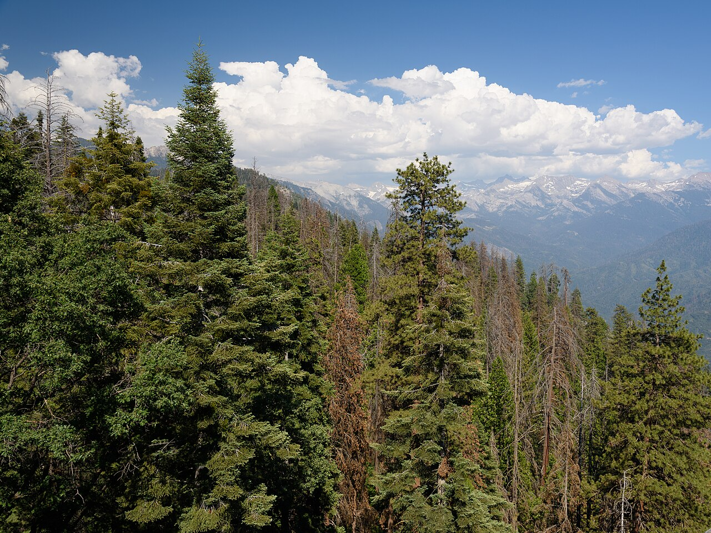

Sequoia and Kings Canyon from Three Rivers · 5-day family itinerary
Five July days for a ten-year-old and a seven-year-old, based in Three Rivers outside the Ash Mountain entrance. The weekday goes to the General Sherman Tree, Friday to a waterfall walk and a cave, and Saturday to Moro Rock on the free shuttle, because NPS closes that road to private cars on summer weekends when the shuttles run.

Photo: King of Hearts, Moro Rock Trail Sequoia July 2017 001, CC BY-SA 4.0, via Wikimedia Commons. Photographed in July 2017, the same month as this plan.

Checked before you commit
This illustrative route flies into Fresno Yosemite International Airport, drives to Three Rivers on Highway 198, stays four nights there and leaves through Kings Canyon on Highway 180. The National Park Service (NPS) pages for road conditions, shuttles, vehicle length limits, fees, day hikes, Crystal Cave, the busy season and directions were read on 20 November 2026. Nothing was booked.
One base, one road up. NPS says Highway 198 enters Sequoia at Three Rivers and that the last gas before the park is in Three Rivers, 5 miles outside the Ash Mountain entrance; there is none inside. Days 2 to 4 go up the Generals Highway to Giant Forest and Lodgepole and come back down. Day 5 drives north to Grant Grove and out to Fresno.
Short walks, early starts. The longest walk is Tokopah Falls on Day 3, which NPS calls easy: 1.7 miles (2.7 kilometres) each way. The Sherman Tree trail is half a mile with stairs, the Big Trees Trail 0.75 miles, the Moro Rock stairway climbs 300 feet, and the General Grant Tree Trail is a third of a mile.
We didn’t check rooms in Three Rivers, the hire car, flights or drive times beyond what NPS publishes. The US$35 private vehicle pass is as NPS showed it on 20 November 2026. Crystal Cave tickets are sold online only, at least 36 hours ahead. A booking-hub link doesn’t hold a room, a car or a tour.
Planning boundary: dates are illustrative; the worked example runs Wednesday 14 to Sunday 18 July 2027, five days counted from the flight in to the drive out. NPS lists summer, June to August, among its busiest times, and says entrance waits in the busy season can reach one to two hours. The summer 2027 shuttle dates weren’t posted when we looked; the 2026 service ran from 22 May to 7 September.
NPS says the Moro Rock and Crescent Meadow road is closed to general motor vehicle traffic on summer weekends and holidays when the shuttles are operating, so Saturday is planned around the shuttle. Alfred doesn’t read shuttle schedules, road alerts or cave ticket availability. A booking-hub link doesn’t prove a booking.
Route and family-coordination brief
Party: two adults, a ten-year-old and a seven-year-old. Base: Three Rivers for four nights. NPS lists Wuksachi Lodge inside the park, 4 miles from Giant Forest Museum, and says lodges often fill in the busy season. Pace: into the park early, out by mid-afternoon. Assumption: an ordinary hire car from Fresno; we didn’t check rooms, hire terms or fares.
Weekend rule: NPS says the road to Moro Rock, Tunnel Log and Crescent Meadow is closed to private vehicles on weekends and holidays in summer, and that the free shuttles are the easiest way in. Route 2 runs from Giant Forest Museum to Moro Rock and Crescent Meadow. Shuttles run only in Sequoia National Park; NPS says there are none in Kings Canyon.
Parking rule: NPS says the Giant Forest Museum and General Sherman Tree car parks are usually full by mid-morning, and as early as 10 am in the busy season, and suggests the larger lots at Wolverton and Lodgepole. Our inference: on shuttle days, park at Lodgepole and ride Route 1, which stops at Lodgepole, the General Sherman Tree trailhead and Giant Forest Museum.
Entrance rule: NPS says long lines form at the entrances on summer Fridays, Saturdays and holidays from Memorial Day to Labor Day, that arriving before 8 am helps, and that entrance stations are cashless. It suggests buying the pass ahead on Recreation.gov. Non-US residents aged 16 and over pay an extra US$100 each unless they enter with an annual or America the Beautiful pass.
Road rule: NPS says vehicles longer than 22 feet (6.7 metres) are not advised on the Generals Highway between Potwisha Campground and Giant Forest Museum, a 16-mile stretch of hairpins built in the early 1920s, and are prohibited on the Moro Rock and Crescent Meadow road and on Crystal Cave Road. A family car is well under that; a hired campervan may not be.
Bear rule: NPS requires all food and anything with a scent to be stored, and names baby car seats in that list. The shuttle page says to move food and scented items from your car into a bear-resistant storage box before you leave it. NPS also says you are likely to lose phone signal about five minutes inside the entrance, so download the NPS app’s park data before you go.
Left out: Mineral King, whose road NPS describes as very narrow, partly unpaved and without guardrails; Cedar Grove, a longer drive into Kings Canyon; wilderness trails; and river swimming, which NPS calls very dangerous. In Alfred, while the trip is still Planning, you can keep or change the hotel and then the flights Alfred picked, and browse the activity and meal carousels. Their Like toggles aren’t saved. We did not test whether city search offers Three Rivers.
Day 1 — Fly into Fresno, drive to Three Rivers
Fly into Fresno Yosemite International Airport and collect the hire car. NPS says the airport is about 1¾ hours from the Sequoia entrance on Highway 198, and Three Rivers is the town just outside it. Buy the US$35 private vehicle pass on Recreation.gov before you go; NPS says it covers everyone in the car for one to seven days and that entrance stations take no cash.
Check in at Three Rivers and fill the tank: NPS says there are no gas stations or chargers inside the parks and that the nearest gas to the Ash Mountain entrance is in Three Rivers, 5 miles out. NPS also lists EV charging in town.
Pack the next day’s food in one bag you can lift straight into a bear box, download the NPS app’s park data for offline use, and read the road conditions page and alerts.
Fallback: if the flight lands late, drive straight to Three Rivers and leave the shopping for the morning; the park is open 24 hours a day.
Live-check: NPS alerts and road conditions; the road information line, (559) 565-3341; your check-in time.
Day 2 — A weekday in Giant Forest: the General Sherman Tree and the Big Trees Trail
Enter at Ash Mountain before 8 am, which NPS says helps you avoid long lines and busy trails. Drive up the Generals Highway, the stretch of hairpins NPS describes between Potwisha and Giant Forest, and on to the main Sherman Tree car park off Wolverton Road. A Thursday is the quieter choice: NPS says weekdays are less busy than weekends.
Walk the half-mile main trail down to the General Sherman Tree. NPS says it descends with some stairs, at about 7,000 feet, so rest on the benches. When the shuttles run, NPS suggests continuing on towards the Generals Highway and riding back up to the main car park. If the shuttle season has started, ride Route 1 to Giant Forest Museum.
From Giant Forest Museum, walk the Big Trees Trail, a paved, accessible 0.75-mile loop around Round Meadow that NPS says takes about an hour, with panels on sequoia ecology. Ride Route 1 back to the Sherman Tree trailhead and Route 4 to the main car park, then drive down. On the way, stop at Hospital Rock, where NPS points to Native American pictographs and mortars.
Fallback: if the main Sherman car park is full, use Wolverton, where NPS says parking is usually available; shuttle Route 4 links it to the Sherman Tree trailhead.
Live-check: the shuttle dates; the Congress Trail status if you want the paved two-mile loop; fire restrictions; air quality.
Day 3 — Tokopah Falls, then Crystal Cave if you hold tickets
Friday is one of the days NPS says entrance lines get long in summer, so go in early again. Drive to Lodgepole and start the Tokopah Falls trail just beyond the Marble Fork Bridge in Lodgepole Campground.
NPS calls it an easy walk of 1.7 miles (2.7 kilometres) each way along the Marble Fork of the Kaweah River to the granite cliffs of Tokopah Canyon and a 1,200-foot cascading waterfall, most impressive in early summer. Keep the children back from the water: NPS says the parks’ rivers are extremely hazardous and the rocks beside them slippery. NPS lists a market with grocery items at Lodgepole Visitor Center, a shuttle stop away from the campground.
If you bought Crystal Cave tickets, drive to Crystal Cave Road, which leaves the Generals Highway before Giant Forest. NPS says to allow about half a day, with a steep half-mile walk each way between the car park and the cave and a half-mile loop inside, which stays at 50°F (10°C), so bring jackets. Leave enough time to reach the cave for your tour.
Fallback: no tickets, or no 2027 tours yet? Spend the afternoon resting in Three Rivers. Tickets are not sold at the cave, so don’t drive there to try.
Live-check: your tour time; any Crystal Cave Road construction notice; the forecast.
Day 4 — Saturday: Moro Rock, Tunnel Log and Crescent Meadow by shuttle
Today the Moro Rock and Crescent Meadow road is closed to private cars, if the summer shuttles are running, so plan the whole day around them. Enter early, park at Lodgepole, where NPS lists shuttle parking, and ride Route 1 to Giant Forest Museum. Before you leave the car, move every bit of food and anything scented into a bear box.
Change to Route 2 for Moro Rock. NPS says the stairway climbs 300 feet to the top of the granite dome, with a view of the Great Western Divide and the western half of the park, and warns not to climb if there is ice or snow on the steps. Tunnel Log is just past Moro Rock on the same route.
Ride on to Crescent Meadow, where NPS lists the Crescent Meadow Loop and the trails to Tharp’s Log. Ask the driver what time the last pickup is. NPS also suggests riding out and walking back so there is no risk of missing the last shuttle. Ride back to Lodgepole, then drive down; Amphitheater Point gives a side view of the rock you climbed.
Fallback: if the 2027 shuttles aren’t running on your Saturday, the weekend closure applies only when they are; check the road page that morning and expect limited parking at Moro Rock.
Live-check: shuttle times at the stop signs; the last pickup; the road conditions page.
Day 5 — North to the General Grant Tree, then Fresno
Check out and drive the Generals Highway north through Giant Forest and across Sequoia National Forest land to Grant Grove in Kings Canyon National Park. We didn’t time this drive; NPS doesn’t publish one. There are no shuttles here.
Park at the General Grant Tree car park, 1 mile northwest of the Kings Canyon Visitor Center, and walk the paved third-of-a-mile General Grant Tree Trail past the Gamlin Cabin and the Fallen Monarch. NPS says President Coolidge proclaimed the tree the Nation’s Christmas Tree in 1926.
Leave on Highway 180 through the Big Stump entrance. NPS puts Fresno 60 miles (97 kilometres) and about 1 hour 15 minutes from Big Stump. Return the car and catch an evening flight.
Fallback: if the Generals Highway is closed or delayed between the parks, skip Grant Grove and drive back out through Three Rivers on Highway 198; NPS puts the airport about 1¾ hours from that entrance.
Live-check: the Generals Highway status; your flight time; the car return time.
Planning notes
Related travel note: The weekend road belongs to the shuttle.
Dates are illustrative. At decision time, recheck the NPS shuttle page for the summer 2027 dates and routes, the road conditions page and alerts, the vehicle length limits, the fee page, the Crystal Cave page and the Sequoia Parks Conservancy’s ticket page, the Congress Trail status, fire restrictions and air quality, the forecast, your hire car, your accommodation and your flight times.
Why Saturday is the shuttle day. On a weekday you may be able to drive to Moro Rock yourself, although NPS says parking there is limited. On summer weekends and holidays, when the shuttles run, the road is closed to private cars. Planning the Moro Rock day as a shuttle day means the weekend rule shapes the plan instead of breaking it at the turn-off.
Crystal Cave is a ticket, not a stop. NPS says the cave can be visited only on a guided tour run by the Sequoia Parks Conservancy, that tickets must be bought online at least 36 hours ahead, with two months recommended, and that none are sold at the cave. The 2026 season has ended; NPS expects tours to resume in late spring 2027 and says Crystal Cave Road may have construction during part of the 2027 season.
What we couldn’t confirm. NPS publishes no drive time from Three Rivers to Giant Forest, so we didn’t time it. The Congress Trail had a section closed for reconstruction through September 2026; its 2027 status isn’t posted. Generals Highway delays for hazard-tree removal, noted on the road page in November 2026, may not apply in July 2027. We didn’t read a summer forecast.
Heat and height. NPS says the foothills have hot, dry summers, that the sequoia groves are comfortable and offer a break from that heat, and that temperatures can differ by 20 to 30 degrees with elevation. Pack layers for the groves and the 50°F (10°C) cave, and plenty of water for the car.
Plan a trip
Start with your people, dates and pace, then review the editable plan before booking.
Plan a trip